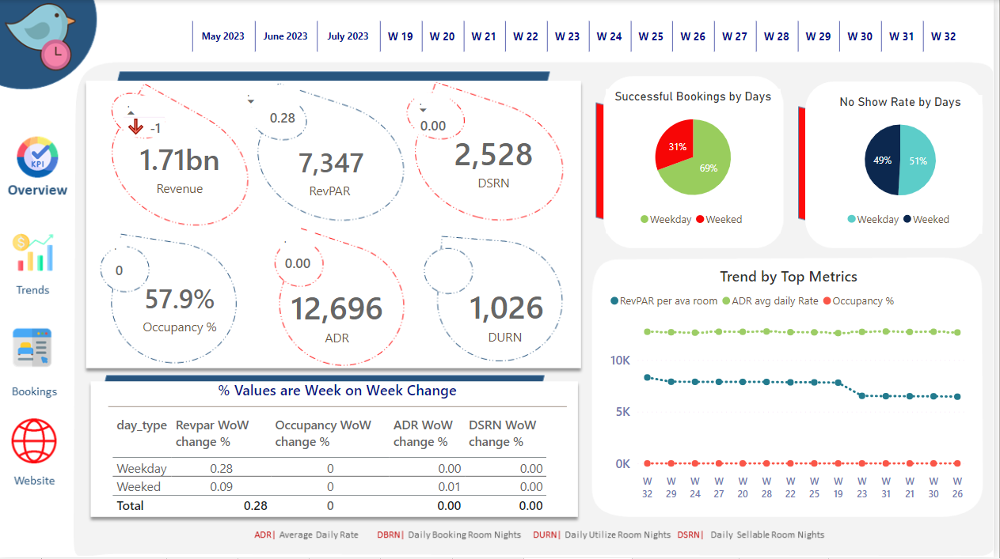

Let me paint you a complete picture of my transformative journey as you approach my digital abode. I plunged into the realm of data as a committed postgraduate student at Liverpool John Moores University, developing a great love for turning data into useful insights. I have an extensive toolkit and use Excel, SQL, Python, and Power BI with the dexterity of an artist to create elegant solutions to challenging data problems. However, my skill set goes beyond coding and into the field of user-centric design, where I create UI/UX experiences that logically combine form and function. My ability in web scraping, which allows me to harvest priceless data tidbits from the digital world, is a testament to my versatility.
However, my all-encompassing strategy is what really makes me stand out. I'm a storyteller as well as a technologist. I've perfected the skill of combining user and client narratives, deftly incorporating them into my designs to produce a seamless and captivating user experience. This ability, which I developed via close interactions, shows that I am able to perceive not only the data itself but also the human components that give it significance. By changing the way consumers interact with data and perceive its impact, I have turned projects from dry assignments into engaging odysseys. I am an expert in both the technical sides of delivering actual change through data-driven decisions, thanks to my skill set and insatiable desire to learn more.
So, I'd like to welcome you to join me as I explore the vast world of data. Every project is a portfolio, every dataset has the potential to be a story, and every disclosure is an insight.

Venturing into the realm of hotel performance analysis, the exploration revolved around a dataset of 134,590 booking records. Leveraging Power Query, meticulous data cleansing ensured accuracy. The creation of 20 robust Data Analysis Expressions (DAX) measures revealed in-depth performance insights.

The comprehensive dashboard for Atlik Hardware Store, encapsulates key performance indicators and offers a deep insight into the business's performance, leveraging advanced analytics and visualization techniques. Designed and implemented a set of essential KPIs that include Total Revenue, Total Sales Quantity, Revenue by Market, and Top 5 Products and Customers.

With over 3500 rows of data, this project involved working with a diverse dataset, comprising one fact table and seven-dimensional tables. The first challenge was to clean the data thoroughly and create a robust star schema model to facilitate efficient analysis.The Sales Dashboard features a user-friendly Home page that summarizes the business's sales performance.
With a focus on data refinement and model construction, navigated intricate datasets, forging a strong analytical foundation. By meticulously crafting measures, uncovered significant insights into revenue and performance, shaping efficient fleet management. Prioritizing user experience, contemporary design and usability principles were used, ensuring an intuitive interface.

Exploring a vast sales dataset of 260,096 entries, star Schema with a robust "Fact" table as the analysis foundation, complemented by dimensional tables. Systematic phases, including normalization and data cleansing, initiated the journey, alongside the addition of conditional columns for seamless navigation. Ranking and filtering measures uncovered key insights and metrics, translating them into impactful visualizations for informed decision-making.

DDelving into substantial Melbourne housing data, and property pricing complexities, considering factors like location, size, and property type. were analyzed. A quantitative study revealed intricate insights into price changes and interrelationships, enhancing market comprehension. Utilizing PowerBI, designed a dashboard from a Kaggle dataset, offering the potential for impactful data-driven decisions within the real estate sector.